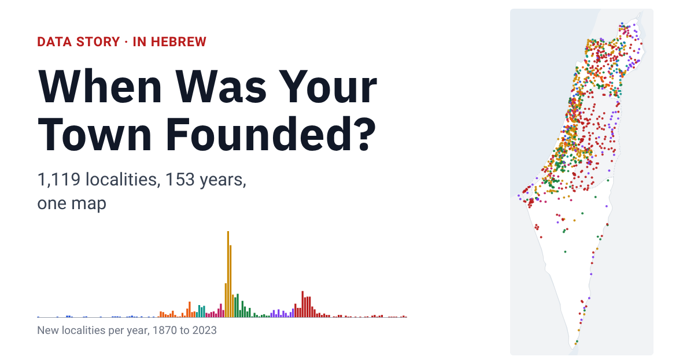
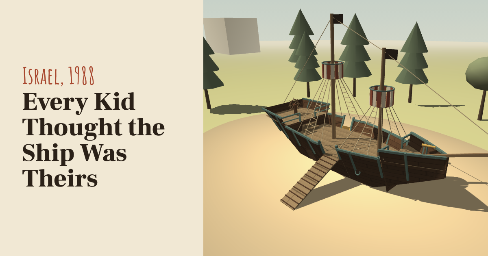
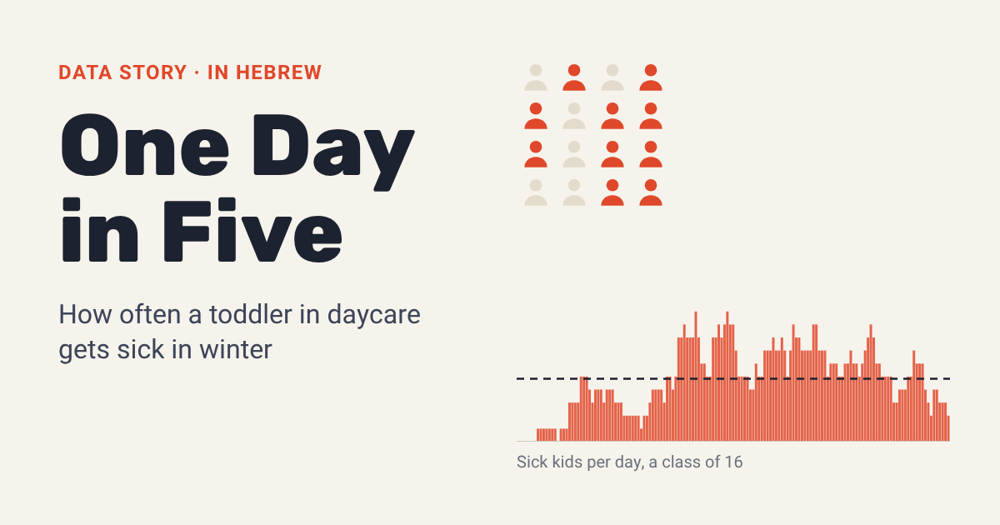
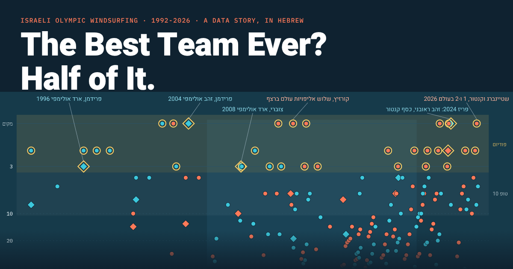
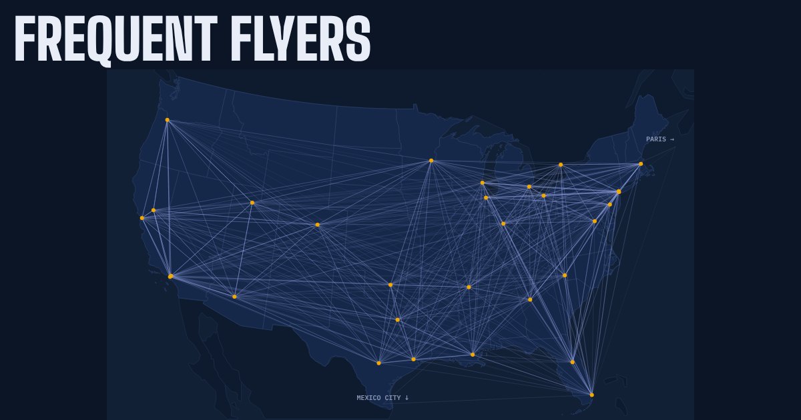
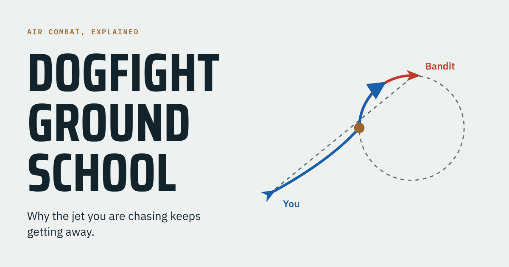
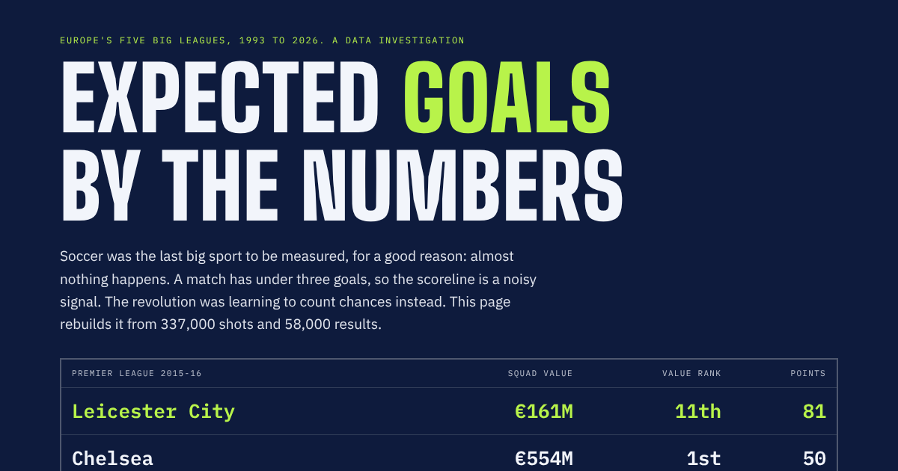
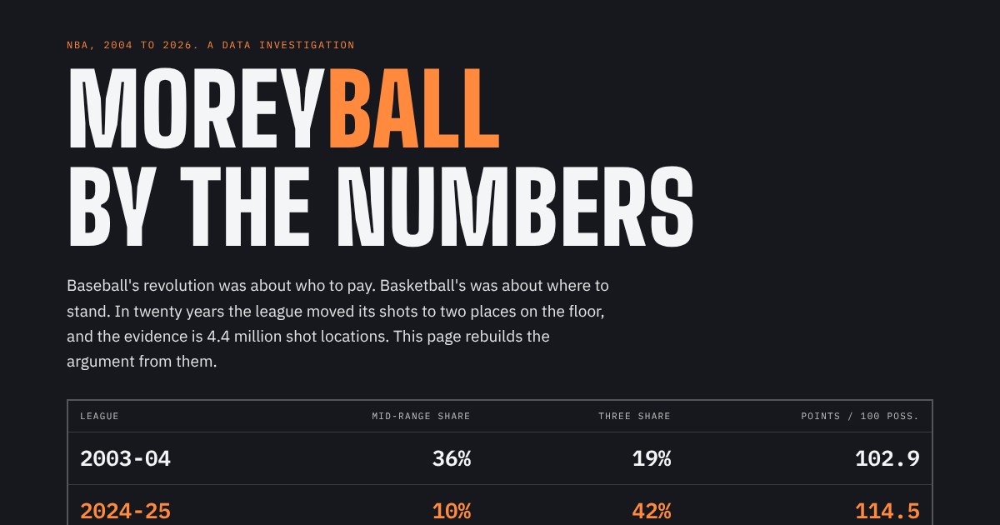
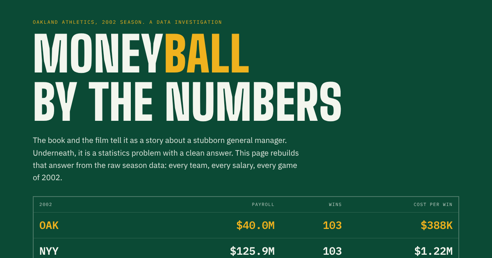
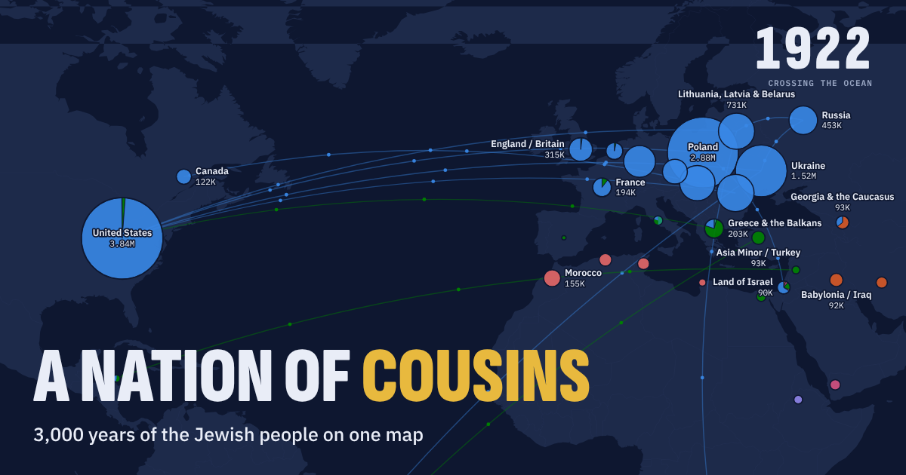

Interactive pages by YonatanLinkedIn ↗
Data Stories
Each page takes one subject and explains it through its numbers, with charts and maps you can play with.

When Was Your Town Founded?
Every Jewish locality in Israel by founding year, 1870 to today. 1,119 dots on a map you can play and search, eight periods, and how settlement moved south. In Hebrew.Open →
Every Kid Thought the Ship Was Theirs
The wooden pirate ships that landed in Israeli playgrounds in 1988: a map of where they stood, who built them, how they ended, and a 3D ship to climb on. In Hebrew.Open →
One Day in Five
How often a toddler in daycare gets sick in winter, when it peaks, and whether it pays off later. A simulated class of 16, run through one winter. In Hebrew.Open →
The Best Team Ever? Half of It.
Israel's Olympic windsurfers, 1992-2026: best ever for the women, not for the men. 1,224 results, one chart. In Hebrew.Open →
Frequent Flyers
An NBA team flies 45,000 miles a season. Watch all 30 do it on one animated map, then see what the miles actually cost.Open →
Dogfight Ground School
A beginner's ground school for anyone who has tried a flight simulator: why the jet you are chasing keeps getting away, and six classic maneuvers in 3D.Open →
Expected Goals by the Numbers
What xG is, whether it predicts anything, and why the league table lies.Open →
Moreyball by the Numbers
How the NBA moved its shots to two places on the floor, told through 4.4 million shot locations.Open →
Moneyball by the Numbers
The 2002 Oakland A's rebuilt from the raw season data: how a poor team bought wins cheaply.Open →